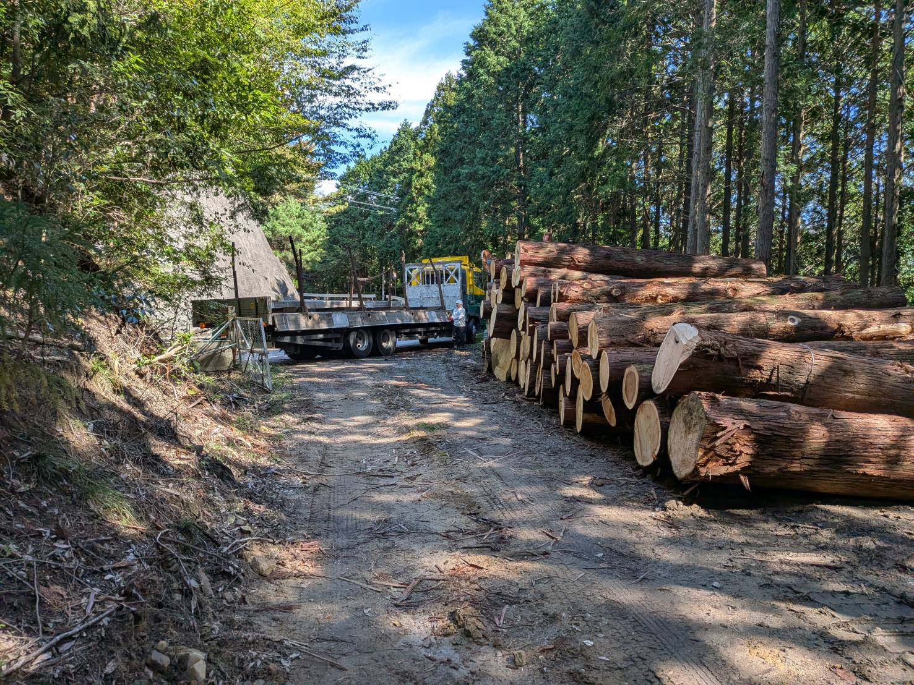

木材へのこだわり
時代とともに進化する、木材のプロフェッショナルとして
山根木材は創業以来、地元岐阜の銘木「今須杉」を中心に、自己所有の山林から木材の伐採、運搬、製材、そして納品までを一貫して自社で手掛けてまいりました。山を守り、木を育てることで培った確かな審美眼は、私たちの原点です。
時代が移り変わり、建築やものづくりのニーズが多様化した現代においては、その伝統と経験をさらに広い視野へと活かしています。現在は自社林にとどまらず、全国各地 of 山林から市場のニーズに最も適した高品質な木材を厳選。深い信頼関係で結ばれた全国の山主様のご協力のもと、責任を持って伐採・運搬し、確かな品質でお客様のもとへお届けしています。

暮らしの「これから」に寄り添う、丁寧な家づくり
また、私たちは木材の供給だけでなく、地域の住まいづくりにも深く携わってきました。近年では、大切な住まいを次の世代へと受け継ぐリフォームやリノベーションを多く手掛けております。
お庭まわりの整備から、ライフスタイルの変化に合わせた家の一部の改築まで、「木」を知り尽くした私たちだからこそできる、木の温もりを活かした心地よい住空間をご提案いたします。どんな小さなご相談でも、どうぞお気軽にお聞かせください。